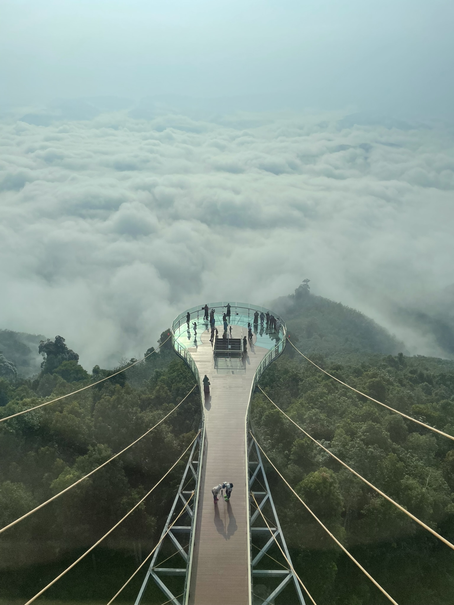
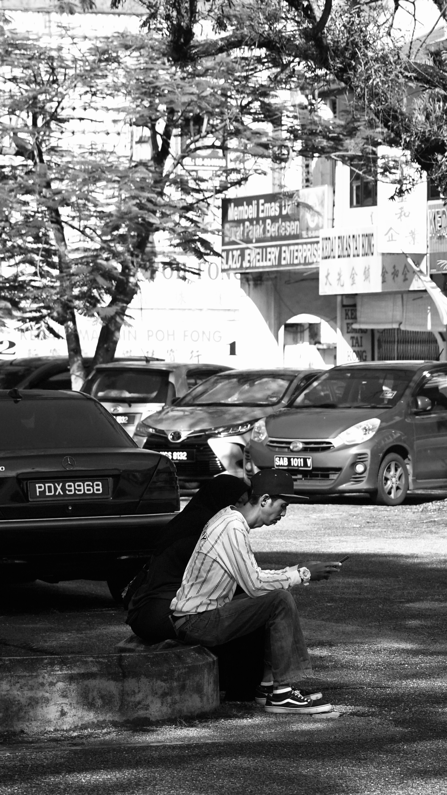
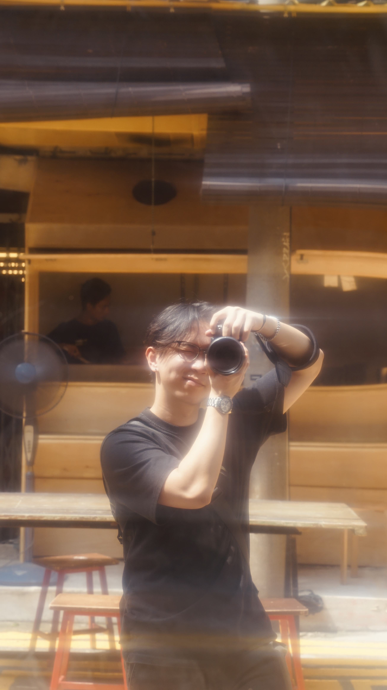

Captured through the lens of my iPhone and Sony A7 Mark II, these are some of my favorite moments, spanning from 2022 to today. Each of the photo captered freezes time and tells a story.
From my experience from working part-time at F&B's, I've found a joy in brewing and making coffee art.

This page is a work in progress! Alongside photography, I have a deep passion for coffee brewing, guitar, digital art, and more. Stay tuned for updates as I continue to share my pursuits.